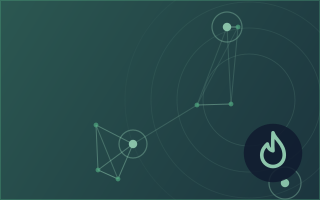
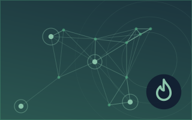
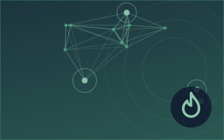
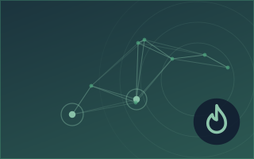

Nuclear energy



Rosatom builds floating nuclear power fleet
Russia's state nuclear corporation Rosatom has begun developing a fleet of floating nuclear power plants for domestic use, CEO Alexey Likhachev said Wednesday on the sidelines of the Russia-Africa… from AzerNews
4.9Importance
0.0Risk · none detected
84%Confidence
Elsewhere in Energy, Resources & Environment
More ›The other sub-sections of Energy, Resources & Environment right now.






